Recuva
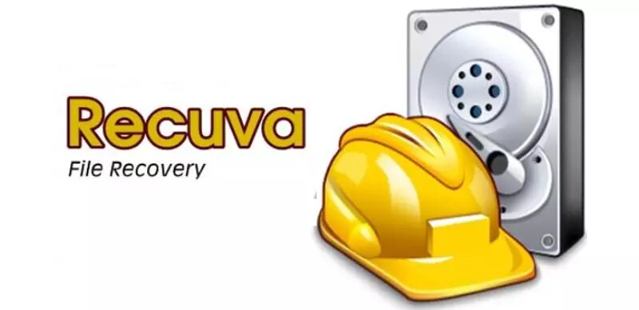
Recuva es un programa de licencia gratuita, desarrollado por Piriform, para Microsoft Windows. Es capaz de restaurar archivos que han
sido permanentemente borrados y que han sido marcados por el sistema operativo como espacio libre.
El programa también puede ser usado para restaurar archivos borrados de memorias Flash/USB, tarjetas de memoria o reproductores MP3.
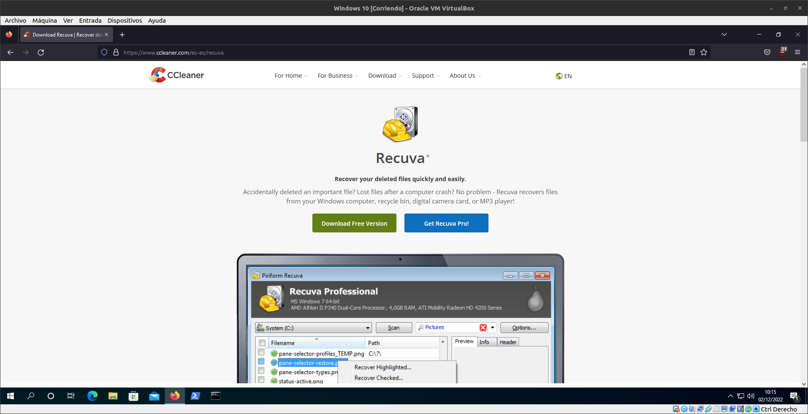
Lo que primero tenemos que hacer es ir a la pagina oficial de Recuva
Ahora le damos a Download Free Version
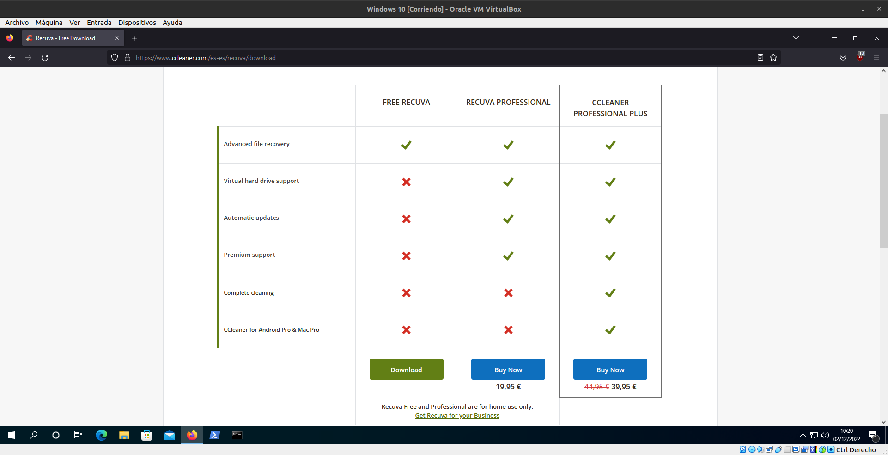
Y nos llevara a elegir un plan, nosotros vamos a seleccionar el FREE RECUVA
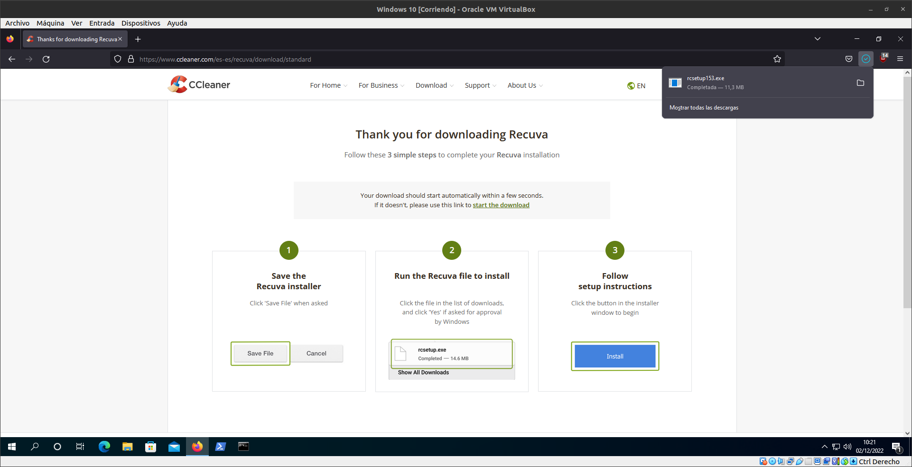
Esperamos a que se Descargue el instalador
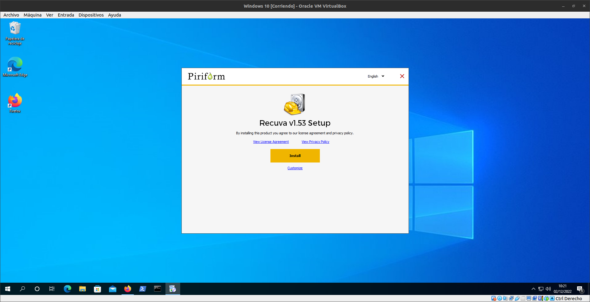
Ejecutamos el Instalador y le damos a Install y esperamos a que se instale.
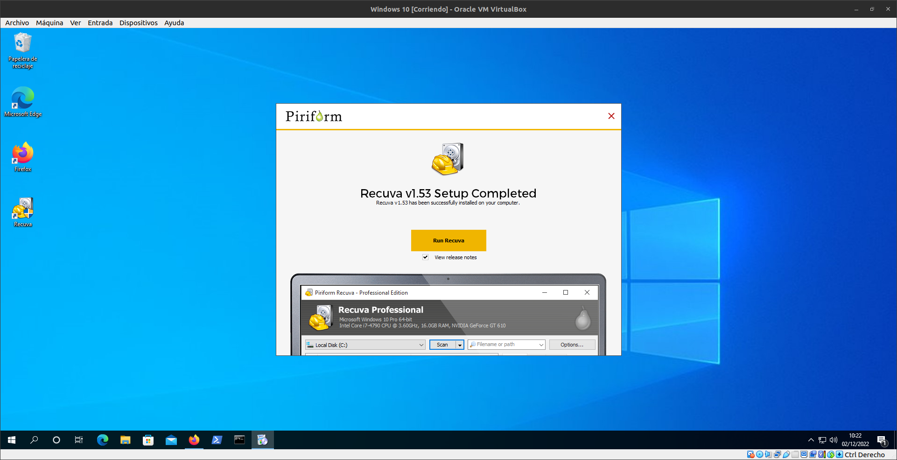
Una vez que se ha instalado le damos a Run recuva para iniciarlo
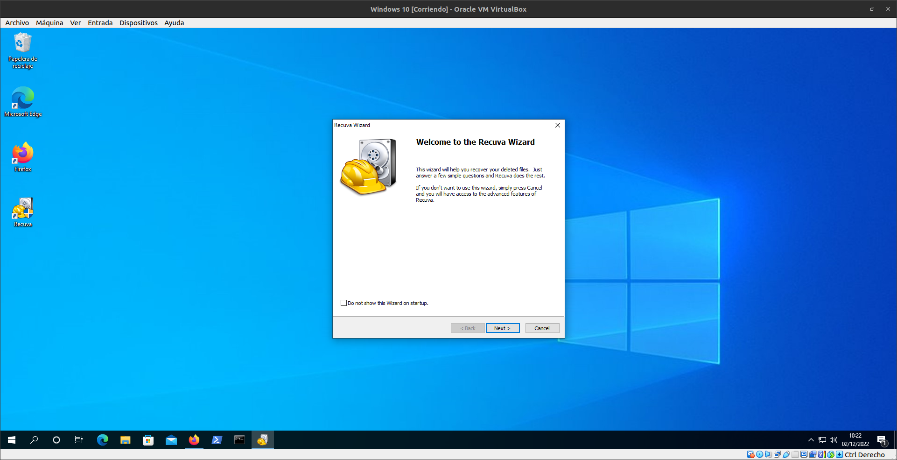
Seleccionamos Next
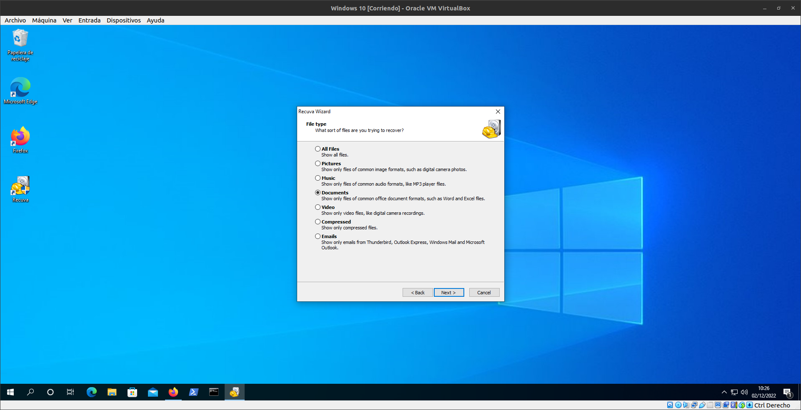
Seleccionamos la ubicacion deonde queremos buscar el archivo
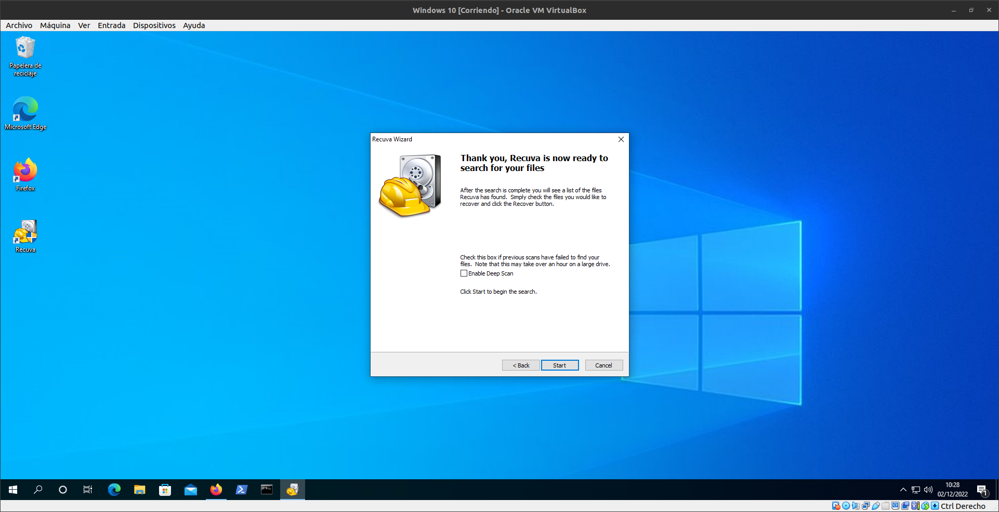
Y le damos a Start para comenzar el analisis
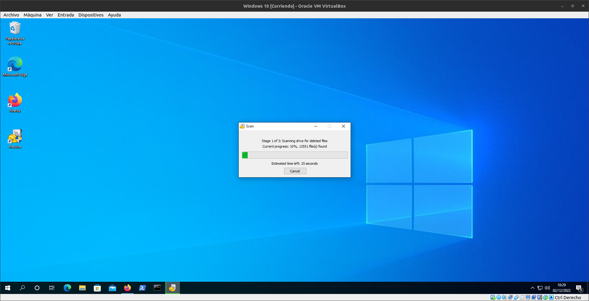
Esperamos a que termine el analisis
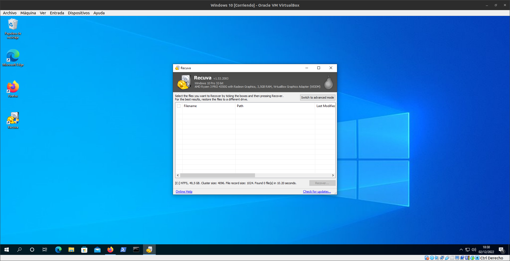
Como se puede ver a mi no me ha encontrado ningun archivo porque no he borrado ninguno recientemente en mi carpeta Documentos